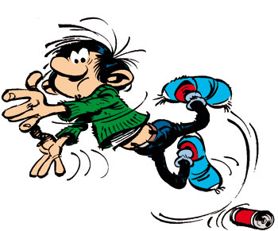
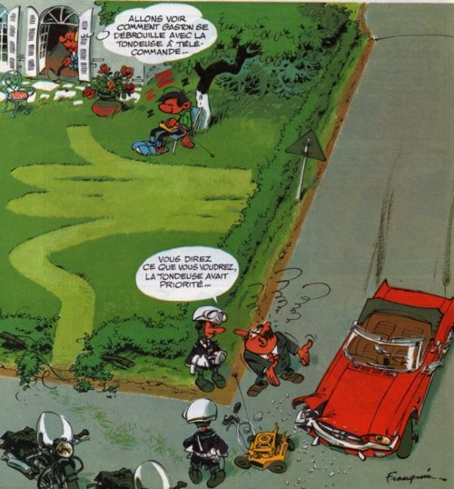
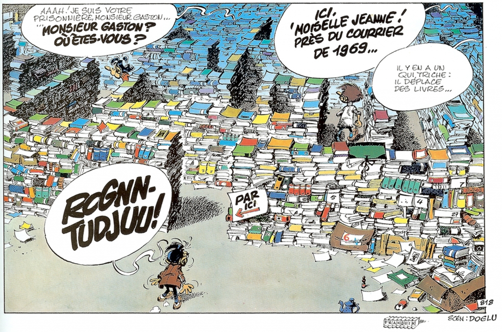

Gaston lagaffe
Posted on
This week I discovered that one of my all-time favourite comics, Gaston Lagaffe, was never translated into English. Ever.
I find that really sad because Gaston was, and still is, a comic I read when I was growing up, and I wish more people I live with (in a global sense, as in my local community) and work with and laugh with… also had read it.
But more than that, it’s because Gaston is a nerd. No, ever better, he’s the evolution of the high school nerd into adulthood. And, to me, he’s the answer to the cry for help and representation of nerds in high school.
You see, I can’t help but compare with American comics, especially American comics that are (stereotypically, perhaps) read and adored by American/English-speaking nerds while growing up. I don’t think they do a very good job of creating a positive nerd attitude to life. Maybe that’s just my flawed perspective as someone who didn’t grow up with them though.
Spiderman leads a double life: he’s a despised science nerd and a revered superhero. The tensions between those two identities are already well-addressed, but I think they’re tensions because Peter Parker doesn’t want to be a despised nerd. This is critical. He might grow beyond it later, but from the very introduction of the character, we have a nerd who hates that he’s a nerd, and craves to be “normal” and have the attention of, at a pick, love interests and the general public.
Superman is also an irrelevant and socially awkward Clark Kent, who (surprise) has trouble getting the attention of his love interest. Both as the superhero and as the non-super he has this notion of “fighting for the little guy.” Where Spiderman is a direct incarnation of nerds and their dreams, Superman is more of a defender of the weak.
Jack Kirby on the X-Men, emphasis mine:
What would you do with mutants who were just plain boys and girls and certainly not dangerous? You school them. You develop their skills. So I gave them a teacher, Professor X. Of course, it was the natural thing to do, instead of disorienting or alienating people who were different from us, I made the X-Men part of the human race, which they were.
With few exceptions, the narrative as it applies to nerds here is largely negative. Sure, it represents nerds and allows a veneer of legitimacy, but the only way to be acknowledged by whomever one wants (girls, boys, authority, the public at large…) is to become someone else.
Yet we nerds of the real world can’t do that. We don’t have superpowers, alien origins, or life-enhancing serums. And try as we might, actually getting to be acknowledged and accepted in society requires a lot of work and time and practice and experience. And it requires failure.
This is what Gaston represents, to me. Let me introduce you. This is Gaston:

He’s an office junior in a busy publication house. He’s clumsy, lazy, easy-going, socially-awkward, and an unrecognised genius. This is one of his minor inventions, a radio-controlled lawn mower:

He also probably has some ADHD symptoms, or at least that thing where you have a million ideas and can’t focus on what you’re supposed to be doing. So he has a radical solution: he goes and creates those ideas. He follows the threads and does stuff.

And yet, Gaston is hopelessly out of society’s proper functioning. He isn’t a role model: this isn’t someone you want to emulate in every way. He’s not successful, he doesn’t have the recognition of his peers, and he’s still despised by “normals”. But this is also precisely why I think he is a better representation for nerds.
You see, he doesn’t want these things. He’s not successful by society’s standards, but he has fun and creates a bunch of things and clearly believes he’s doing pretty well, by his standards. He doesn’t have the recognition of his peers, but he has good friends who are more or less as quirky as he is, and accept him for who he his. Even those who initially despise him come to a grudging respect and even occasional admiration.

For most of the series, he has a romantic aspiration with another character, but, until the very end, it’s an asexual relationship. And it’s not just that our antihero is too socially awkward to initiate sex: no, both of them are happy in the relationship they share.
But most importantly, Gaston fails. A lot.

This is a funny comic strip, and many of the gags feature Gaston’s inventions, ideas, setups, and other creations going wrong, either at his or others’ expense. He fails and fails and yet never fails to get back up and go on. In fact, we never see him getting back up, it happens in between the strips.
Gaston is never angsty nor brooding; he might not be a regular member of society but doesn’t yearn for it either. Gaston is happy in life, without denying who he is, without aspiring to be someone else, without needing extraordinary powers to accomplish any of this. He’s just himself, and he’s just fine.
And, really, that’s all I’ve ever wanted.